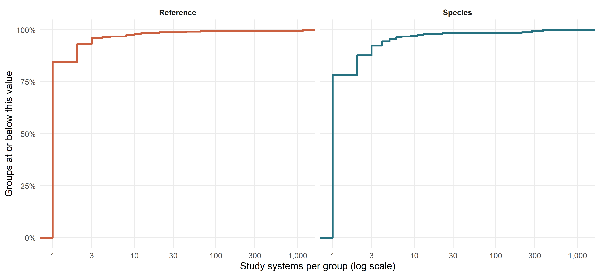

Code
source(here::here("chapters", "Rscripts", "00_packages.R"))
source(here::here("chapters", "Rscripts", "01_paths.R"))
source(here::here("chapters", "Rscripts", "05_phylogeny.R"))source(here::here("chapters", "Rscripts", "00_packages.R"))
source(here::here("chapters", "Rscripts", "01_paths.R"))
source(here::here("chapters", "Rscripts", "05_phylogeny.R"))Multiple contrasts can share a paper, study system, or species. Treating them as independent would overstate the effective sample size and make uncertainty intervals too narrow. The location submodel represents three distinct sources of uncertainty or dependency:
ref_id) — contrasts from the same paper share design choices, sampling effort, and measurement protocols.sp_ncbi, via A) — species that share evolutionary history have correlated intercepts.es_id_model, via V) — each contrast has a SAFE sampling variance. Its group-level standard deviation is fixed to one, so this propagates known measurement uncertainty rather than estimating another clustering variance.sys_id (study system) overlaps strongly with reference and species. The diagnostics below describe that overlap; sys_id is reserved for sensitivity analyses.
dat_es <- readRDS(here::here("Rdata", "effect_sizes", "proceed_lnm_safe.rds"))
A_full <- readRDS(here::here("Rdata", "phylogeny", "proceed_A_matrix.rds"))
name_map <- readRDS(here::here("Rdata", "phylogeny", "proceed_name_map.rds"))
dat_mapped <- apply_phylo_name_map(dat_es, name_map)
has_raw_name <- !is.na(dat_mapped$sp_ncbi) &
nzchar(trimws(as.character(dat_mapped$sp_ncbi)))
has_canonical_name <- !is.na(dat_mapped$sp_ncbi_canonical) &
nzchar(as.character(dat_mapped$sp_ncbi_canonical))
current_species <- dat_mapped |>
dplyr::filter(has_raw_name) |>
dplyr::distinct(sp_ncbi, sp_ncbi_canonical) |>
dplyr::mutate(
status = dplyr::if_else(
!is.na(sp_ncbi_canonical) & nzchar(as.character(sp_ncbi_canonical)),
"Reconciled", "Unresolved"
)
)Species counts differ depending on whether they refer to raw database names, reconciled names, all tips in the cached phylogeny, or species actually used by the models. All dependency diagnostics below use the current model universe: contrasts with a canonical species name after applying the same cached reconciliation map used by the model grid.
current_canonical <- unique(as.character(
dat_mapped$sp_ncbi_canonical[has_canonical_name]
))
current_canonical <- current_canonical[
!is.na(current_canonical) & nzchar(current_canonical)
]
dependency_flow <- tibble::tibble(
Stage = c(
"Effect-size dataset",
"Named species in current dataset",
"Current names reconciled by cached map",
"Canonical species used in diagnostics and models",
"Current names unresolved",
"Contrasts excluded because species was unresolved",
"All tips in cached A matrix",
"Cached A tips unused by current dataset"
),
Contrasts = c(
nrow(dat_mapped), NA, NA, sum(has_canonical_name), NA,
sum(has_raw_name & !has_canonical_name), NA, NA
),
Species = c(
NA,
dplyr::n_distinct(dat_mapped$sp_ncbi[has_raw_name]),
sum(current_species$status == "Reconciled"),
length(current_canonical),
sum(current_species$status == "Unresolved"),
NA,
nrow(A_full),
length(setdiff(rownames(A_full), current_canonical))
)
)
knitr::kable(
dependency_flow,
caption = "Flow from the current effect-size dataset to the species universe used in dependency diagnostics."
)| Stage | Contrasts | Species |
|---|---|---|
| Effect-size dataset | 7237 | NA |
| Named species in current dataset | NA | 267 |
| Current names reconciled by cached map | NA | 261 |
| Canonical species used in diagnostics and models | 7186 | 253 |
| Current names unresolved | NA | 6 |
| Contrasts excluded because species was unresolved | 51 | NA |
| All tips in cached A matrix | NA | 265 |
| Cached A tips unused by current dataset | NA | 12 |
The 253 canonical species reported here are the same current-analysis species reported in the Phylogenetic reconciliation chapter. The cached A matrix is larger because it retains tips for species no longer present in the current effect-size dataset. Unused tips do not enter a fitted model.
dat_re_diag <- dat_mapped |>
dplyr::filter(has_canonical_name) |>
dplyr::transmute(
es_id_db = factor(es_id_db),
ref_id = factor(ref_id),
sys_id = factor(sys_id),
sp_ncbi = factor(sp_ncbi_canonical)
) |>
tidyr::drop_na() |>
droplevels()
cat("Contrasts in current model universe:", nrow(dat_re_diag), "\n")Contrasts in current model universe: 7186 cat("Canonical species in current model universe:",
dplyr::n_distinct(dat_re_diag$sp_ncbi), "\n")Canonical species in current model universe: 253 For a pair A and B, “A nested in B” means every level of A occurs with exactly one level of B. The reverse relationship can differ, so both directions are reported.
check_nesting <- function(data, a, b) {
tmp <- data |>
dplyr::distinct(.data[[a]], .data[[b]]) |>
dplyr::count(.data[[a]], name = "n_unique_b")
tibble::tibble(
factor_a = a,
factor_b = b,
n_levels_a = dplyr::n_distinct(data[[a]]),
n_levels_b = dplyr::n_distinct(data[[b]]),
min_unique_b_per_a = min(tmp$n_unique_b),
median_unique_b_per_a = stats::median(tmp$n_unique_b),
max_unique_b_per_a = max(tmp$n_unique_b),
prop_a_single_b = mean(tmp$n_unique_b == 1),
a_nested_in_b = all(tmp$n_unique_b == 1)
)
}
group_vars <- c("es_id_db", "ref_id", "sys_id", "sp_ncbi")
nesting_tbl <- purrr::map_dfr(group_vars, function(a) {
purrr::map_dfr(setdiff(group_vars, a), function(b) {
check_nesting(dat_re_diag, a, b)
})
}) |>
dplyr::arrange(dplyr::desc(a_nested_in_b), factor_a, factor_b)knitr::kable(nesting_tbl, digits = 2,
caption = "Directed pairwise nesting diagnostics in the current model universe.")| factor_a | factor_b | n_levels_a | n_levels_b | min_unique_b_per_a | median_unique_b_per_a | max_unique_b_per_a | prop_a_single_b | a_nested_in_b |
|---|---|---|---|---|---|---|---|---|
| es_id_db | ref_id | 7186 | 254 | 1 | 1 | 1 | 1.00 | TRUE |
| es_id_db | sp_ncbi | 7186 | 253 | 1 | 1 | 1 | 1.00 | TRUE |
| es_id_db | sys_id | 7186 | 1533 | 1 | 1 | 1 | 1.00 | TRUE |
| sys_id | sp_ncbi | 1533 | 253 | 1 | 1 | 1 | 1.00 | TRUE |
| ref_id | es_id_db | 254 | 7186 | 1 | 8 | 1284 | 0.09 | FALSE |
| ref_id | sp_ncbi | 254 | 253 | 1 | 1 | 64 | 0.93 | FALSE |
| ref_id | sys_id | 254 | 1533 | 1 | 1 | 1161 | 0.85 | FALSE |
| sp_ncbi | es_id_db | 253 | 7186 | 1 | 5 | 1192 | 0.27 | FALSE |
| sp_ncbi | ref_id | 253 | 254 | 1 | 1 | 13 | 0.79 | FALSE |
| sp_ncbi | sys_id | 253 | 1533 | 1 | 1 | 379 | 0.78 | FALSE |
| sys_id | es_id_db | 1533 | 7186 | 1 | 1 | 1156 | 0.77 | FALSE |
| sys_id | ref_id | 1533 | 254 | 1 | 1 | 10 | 0.97 | FALSE |
nesting_matrix <- nesting_tbl |>
dplyr::select(factor_a, factor_b, max_unique_b_per_a) |>
tidyr::pivot_wider(names_from = factor_b, values_from = max_unique_b_per_a)
knitr::kable(nesting_matrix,
caption = "Maximum number of B levels observed within one A level. A value of one indicates complete nesting.")| factor_a | ref_id | sp_ncbi | sys_id | es_id_db |
|---|---|---|---|---|
| es_id_db | 1 | 1 | 1 | NA |
| sys_id | 10 | 1 | NA | 1156 |
| ref_id | NA | 64 | 1161 | 1284 |
| sp_ncbi | 13 | NA | 379 | 1192 |
make_link_summary <- function(data, grouping_factor, linked_factor, label) {
data |>
dplyr::distinct(.data[[grouping_factor]], .data[[linked_factor]]) |>
dplyr::count(.data[[grouping_factor]], name = "n_matches") |>
dplyr::summarise(
Group = grouping_factor,
Relationship = label,
`Groups with only 1 match` = sum(n_matches == 1),
`Total groups` = dplyr::n(),
`Only 1 match (%)` = round(100 * mean(n_matches == 1), 1),
`Median matches` = stats::median(n_matches),
`Maximum matches` = max(n_matches)
)
}
support_table <- dplyr::bind_rows(
make_link_summary(dat_re_diag, "sp_ncbi", "sys_id", "systems per species"),
make_link_summary(dat_re_diag, "sys_id", "sp_ncbi", "species per system"),
make_link_summary(dat_re_diag, "ref_id", "sys_id", "systems per reference"),
make_link_summary(dat_re_diag, "sys_id", "ref_id", "references per system")
)
knitr::kable(support_table,
caption = "Overlap of study systems with species and references.")| Group | Relationship | Groups with only 1 match | Total groups | Only 1 match (%) | Median matches | Maximum matches |
|---|---|---|---|---|---|---|
| sp_ncbi | systems per species | 198 | 253 | 78.3 | 1 | 379 |
| sys_id | species per system | 1533 | 1533 | 100.0 | 1 | 1 |
| ref_id | systems per reference | 215 | 254 | 84.6 | 1 | 1161 |
| sys_id | references per system | 1494 | 1533 | 97.5 | 1 | 10 |
support_long <- dplyr::bind_rows(
dat_re_diag |>
dplyr::distinct(sp_ncbi, sys_id) |>
dplyr::count(sp_ncbi, name = "n_systems") |>
dplyr::transmute(group = "Species", n_systems),
dat_re_diag |>
dplyr::distinct(ref_id, sys_id) |>
dplyr::count(ref_id, name = "n_systems") |>
dplyr::transmute(group = "Reference", n_systems)
)
ggplot2::ggplot(support_long, ggplot2::aes(x = n_systems, colour = group)) +
ggplot2::stat_ecdf(linewidth = 1.4) +
ggplot2::facet_wrap(~ group) +
ggplot2::scale_colour_manual(
values = c(Species = "#257180", Reference = "#CB6040"), guide = "none"
) +
ggplot2::scale_x_log10(
breaks = c(1, 3, 10, 30, 100, 300, 1000),
labels = scales::comma
) +
ggplot2::scale_y_continuous(labels = scales::percent) +
ggplot2::labs(x = "Study systems per group (log scale)",
y = "Groups at or below this value") +
ggplot2::theme_minimal(base_size = 15) +
ggplot2::theme(panel.grid.minor = ggplot2::element_blank(),
strip.text = ggplot2::element_text(face = "bold"))
Unresolved names receive NA in sp_ncbi_canonical, and prepare_phylo_and_data() removes those contrasts before a primary phylogeny-adjusted model is fitted. A star contribution is used only for a resolved canonical species absent from A; there are currently 0 such species.
current_unresolved <- current_species |>
dplyr::filter(status == "Unresolved") |>
dplyr::transmute(
Species = as.character(sp_ncbi),
Contrasts = purrr::map_int(
Species,
~ sum(as.character(dat_mapped$sp_ncbi) == .x, na.rm = TRUE)
)
) |>
dplyr::arrange(dplyr::desc(Contrasts), Species)
knitr::kable(current_unresolved,
caption = "Unresolved species names in the current effect-size dataset.")| Species | Contrasts |
|---|---|
| Raphanus raphanistrum X Raphanus sativus | 15 |
| Peromyscus<U+00A0>leucopus<U+00A0>noveboracensis | 14 |
| Neogale vison | 6 |
| Pelophylax lessonae/ridibundus | 6 |
| Drepanis coccinea | 5 |
| Neogale frenata | 5 |
The diagnostics show a crossed rather than purely hierarchical structure:
es_id_db is the finest-grained identifier and is nested within the higher-level groupings.Reference and phylogeny therefore represent distinct, estimable sources of dependence. Adding sys_id as a third group-level term would ask the model to separate variance among three strongly overlapping classifications, making variance components weakly identified. Primary models consequently include reference, phylogeny, and known sampling variance; sys_id is added only in the dedicated sensitivity analysis.
readr::write_csv(nesting_tbl,
here::here("Rdata", "tables", "dependency_nesting_table.csv"))
readr::write_csv(support_table,
here::here("Rdata", "tables", "dependency_support_summary.csv"))
readr::write_csv(dependency_flow,
here::here("Rdata", "tables", "dependency_analysis_universe.csv"))
cat("Dependency tables saved.\n")Dependency tables saved.